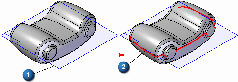
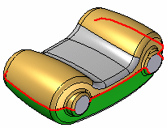

Parting Split command
Use the Parting Split command  to split a set of faces along the silhouette edges of the part, which can be useful when working with a part that will be molded or
cast. Parting lines are the same as silhouette lines for a given face. You define
the vector direction for calculation of the parting lines by defining a reference
plane (1). A parting split feature (2) is represented by curve.
to split a set of faces along the silhouette edges of the part, which can be useful when working with a part that will be molded or
cast. Parting lines are the same as silhouette lines for a given face. You define
the vector direction for calculation of the parting lines by defining a reference
plane (1). A parting split feature (2) is represented by curve.

To better illustrate the results, the surfaces which are split by the parting split feature are shown in green and gold below. The surfaces shown in gray were not split. Surfaces which do not cross the parting line and planar faces are not split by this command.
